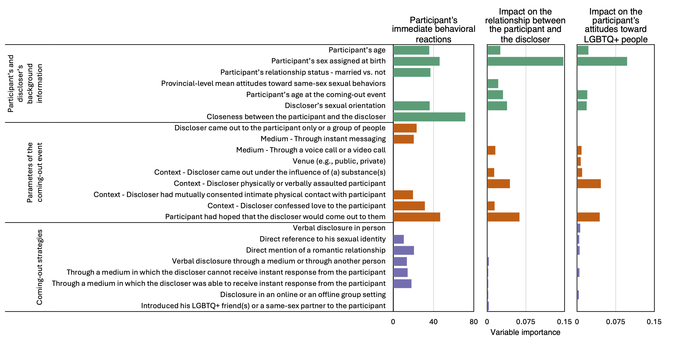
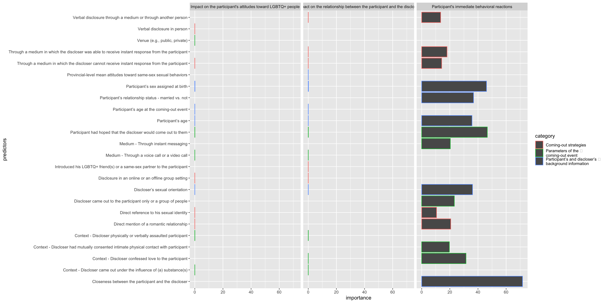
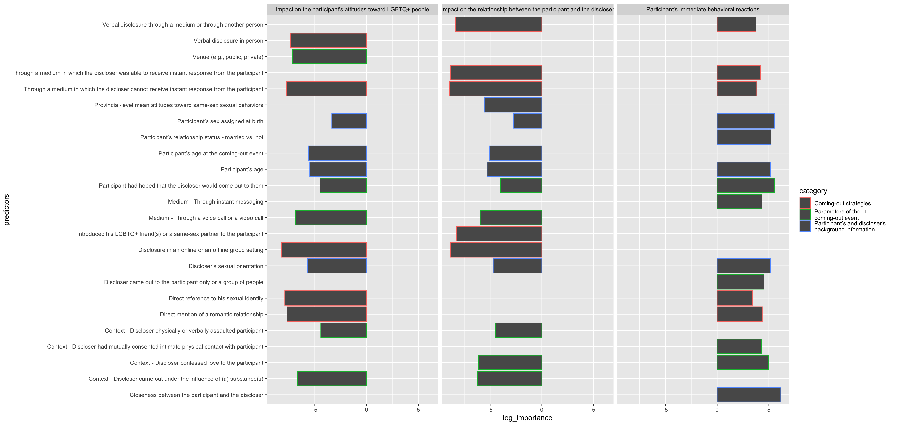
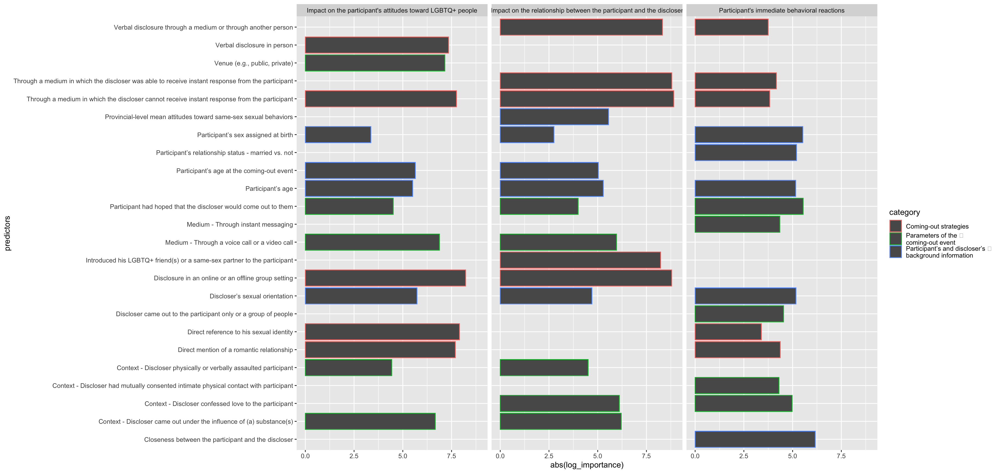
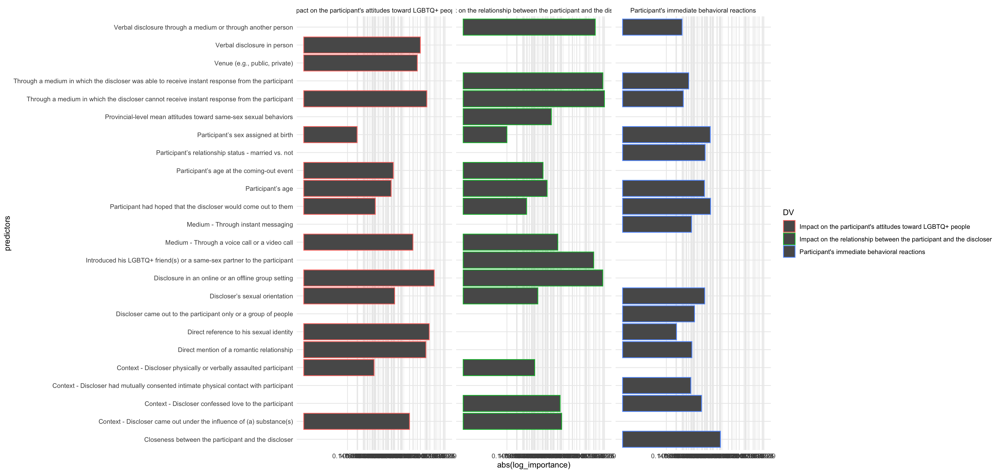
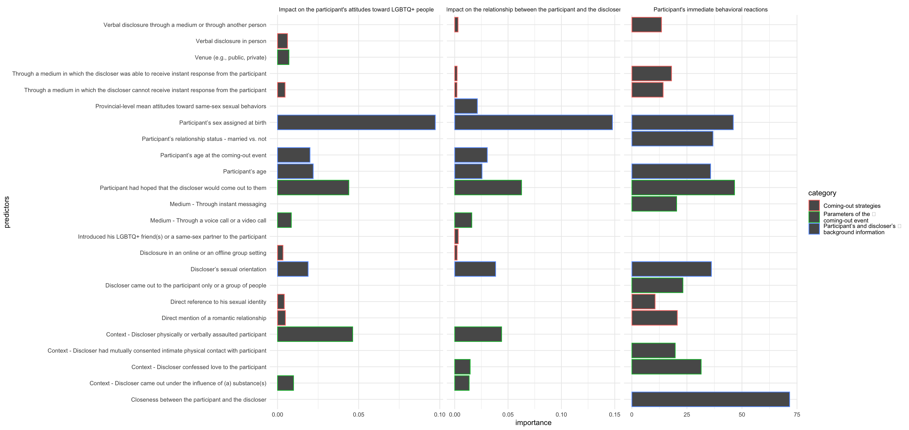
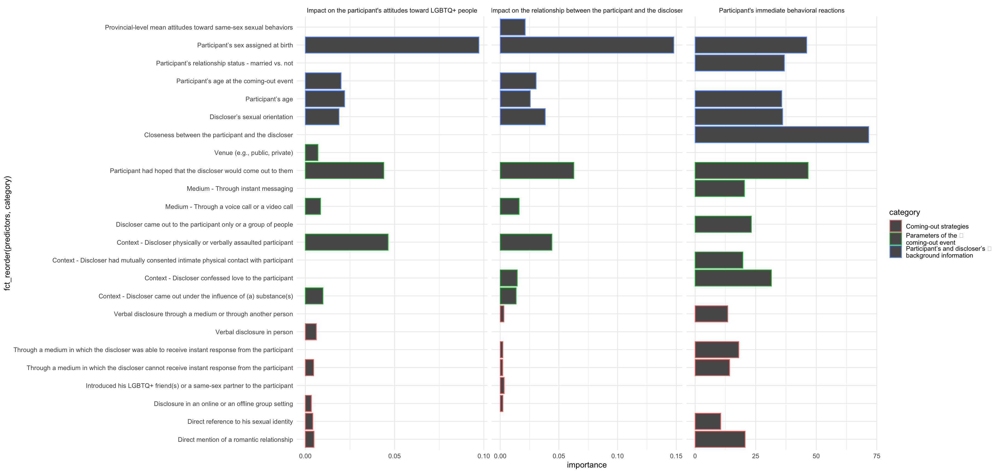
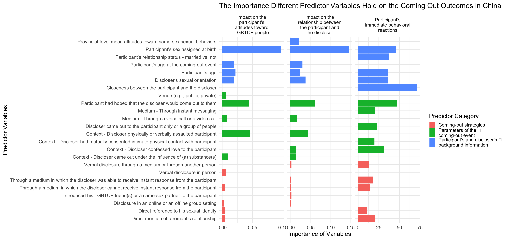
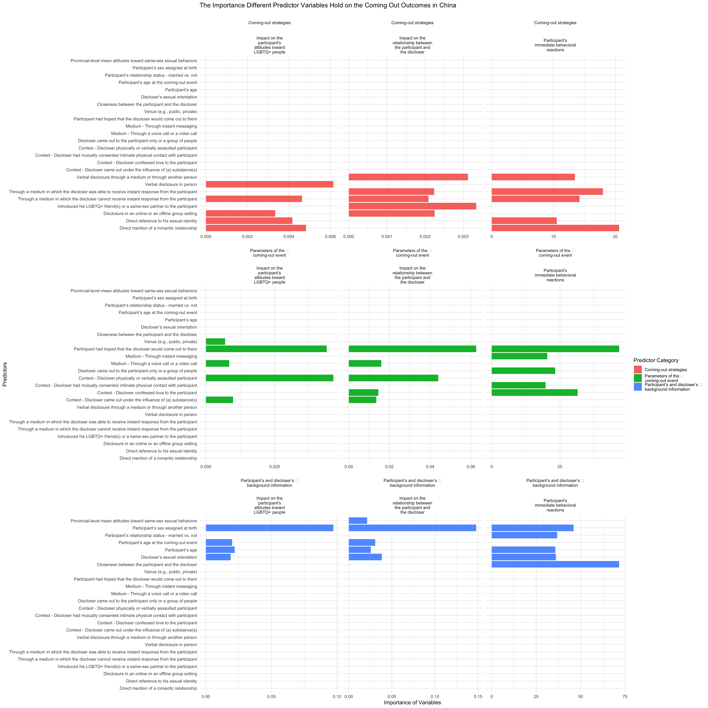

This project intends to verify and test my understanding of data visualization in R using ggplot. The back story is that I talked to Thomas one day and learned that he has a complicated data visualization to redo in Word for his undergrad project. In light of my recent learning of ggplot, I propose to him to let me try doing it in R. If it works, it’ll be a easier and more efficient way if any amendments in needed in the future – he can just change a few codes instead of spending hours trying to draw the multilayer graph in Word.
To give you an idea, the plot I want to recreate looks like this:
original <- image_read("p01/data/Figure 5.png")
print(original)## # A tibble: 1 × 7
## format width height colorspace matte filesize density
## <chr> <int> <int> <chr> <lgl> <int> <chr>
## 1 PNG 3304 1620 sRGB TRUE 441904 72x72
Here are the steps I took to recreate the plot.
data_project1 <- read_excel("p01/data/data_project1.xlsx")At first, I thought it’ll be simple to replicate the plot, so here’s the code I run.
ggplot(data = data_project1,
mapping = aes(x = importance, y = predictors,
color = category)) +
geom_bar(stat='identity') +
facet_wrap(~ DV, ncol = 3)## Warning: Removed 28 rows containing missing values or values outside the scale range
## (`geom_bar()`). As it turns out, it’s not that simple, the problem is that some values are really small (e.g., 0.002240000), others are fairly large (e.g., 71.639730890). So when I map them onto the same scale, the small values disappear, and only large values are visible. So I went on an extensive effort to figure out how to customize the x axis scale so that all values are visible.
The first idea I had in mind was to log the x axis.
#make another variable log_importance
data_project1$log_importance <- log(data_project1$importance, base = 2)
#plot
ggplot(data = data_project1,
mapping = aes(x = log_importance, y = predictors,
color = category)) +
geom_bar(stat='identity') +
facet_wrap(~ DV, ncol = 3)## Warning: Removed 28 rows containing missing values or values outside the scale range
## (`geom_bar()`). Well, the numbers seem to be all visible, but some became negative.
To make all numbers positive:
ggplot(data = data_project1,
mapping = aes(x = abs(log_importance), y = predictors,
color = category)) +
geom_bar(stat='identity') +
facet_wrap(~ DV, ncol = 3)## Warning: Removed 28 rows containing missing values or values outside the scale range
## (`geom_bar()`). Great! Now they are all positive, but the x axis doesn’t reflect the true importance values.
Therefore, I wanted to map the importance value onto the x axis that is drawn based on log_importance.
ggplot(data = data_project1,
mapping = aes(x = abs(log_importance), y = predictors,
color = DV)) +
geom_bar(stat='identity') +
facet_wrap(~ DV, ncol = 3) +
scale_x_continuous(breaks = abs(data_project1$log_importance), labels = data_project1$importance) +
theme_minimal()## Warning: Removed 28 rows containing missing values or values outside the scale range
## (`geom_bar()`). That’s more like it. However, the x axis is too dense with values, so I asked ChatGPT to help me make the x axis more sparse.
Long story short, I tried a bunch of methods that Chat gives me. Only this one works, and it works perfectly. Even better, this method helps to solve two more problems: 1) if you haven’t noticed, the log transformation makes the bars from the first two facets higher than the last one, which is untrue; 2) within each facet, the contrast between each bar is less obvious than it should be. The current method helps to ensure that 1) the x-axis for the three facets are customized to the importance values they portray; 2) for the same outcome variable, the distance between different importance values is proportional to their original distance; 3) the contrast between facets are reasonable.
ggplot(data = data_project1,
mapping = aes(x = importance, y = predictors,
color = category)) +
geom_bar(stat='identity') +
facet_wrap(~ DV, ncol = 3, scales = "free_x") + #this is the key
scale_x_continuous(breaks = scales::breaks_extended(n = 4)) + # Adjust the sparsity of x-axis
theme_minimal() ## Warning: Removed 28 rows containing missing values or values outside the scale range
## (`geom_bar()`).
That was great! But the bars of different categories are scattered around. I want to group them by their category.
ggplot(data = data_project1,
mapping = aes(x = importance, y = fct_reorder(predictors, category),
color = category)) +
geom_bar(stat='identity') +
facet_wrap(~ DV, ncol = 3, scales = "free_x") +
scale_x_continuous(breaks = scales::breaks_extended(n = 4)) + # Adjust number of ticks
theme_minimal()## Warning: Removed 28 rows containing missing values or values outside the scale range
## (`geom_bar()`). Now it’s very close to the original plot. However, I still want to perfect a few things: 1) Color only paints the edge of the bars. I don’t think it’s salient enough, so I want to change it to fill; 2) The labels of the outcomes are in one line. I want to change it to a few lines so that when we shorten the width of the plot, the whole labels are still intact; 3) The labels of the graph is lacking. I want to add them; 4) The font size is too small. I want to make it larger.
#wrap the rows for DV
data_project1$DV <- str_wrap(data_project1$DV, width = 20)
#plot
ggplot(data = data_project1,
mapping = aes(x = importance, y = fct_reorder(predictors, category),
fill = category)) +
geom_bar(stat='identity') +
facet_wrap(~ DV, ncol = 3, scales = "free_x") +
scale_x_continuous(breaks = scales::breaks_extended(n = 4)) + # Adjust number of ticks
theme_minimal(base_size = 16) +
labs(x = "Importance of Variables",
y = "Predictor Variables",
fill = "Predictor Category",
title = "The Importance Different Predictor Variables Hold on the Coming Out Outcomes in China")## Warning: Removed 28 rows containing missing values or values outside the scale range
## (`geom_bar()`).
Upon talking to Mason I realized that the key to data visualization is not to replicate or recreate (though these are important skills too), it’s to tell a story by a plot. I’m aware that this plot, though beautiful, has room for improvement. However, since I was unable to get a hold of Thomas in the past three days to learn more about the data behind this plot, I couldn’t think of a better way to improve this plot due to my limited imagination. One minor attempt, however, I want to try is listed below. Not sure if it’s an improvement, but here it is.
ggplot(data = data_project1,
mapping = aes(x = importance, y = fct_reorder(predictors, category),
fill = category)) +
geom_bar(stat='identity') +
facet_wrap(category ~ DV, ncol = 3, scales = "free_x") +
scale_x_continuous(breaks = scales::breaks_extended(n = 4)) + # Adjust number of ticks
theme_minimal() +
labs(x = "Importance of Variables",
y = "Predictors",
fill = "Predictor Category",
title = "The Importance Different Predictor Variables Hold on the Coming Out Outcomes in China")## Warning: Removed 28 rows containing missing values or values outside the scale range
## (`geom_bar()`). Well, I intended to use the facet_grid() function to separate different categories into different rows of plots so they might look nicer? However, I couldn’t figure out a way for the empty rows to disappear, so now the plot looks redundant.
Anyways, for the rest of this semester, I will prioritize story-telling when I work with visualizing datasets that I’m more familiar with, and if I get a chance to learn more about the current dataset. Nevertheless, I do think I had a good practice of ggplot and learned more about how to manipulating axis in this project.